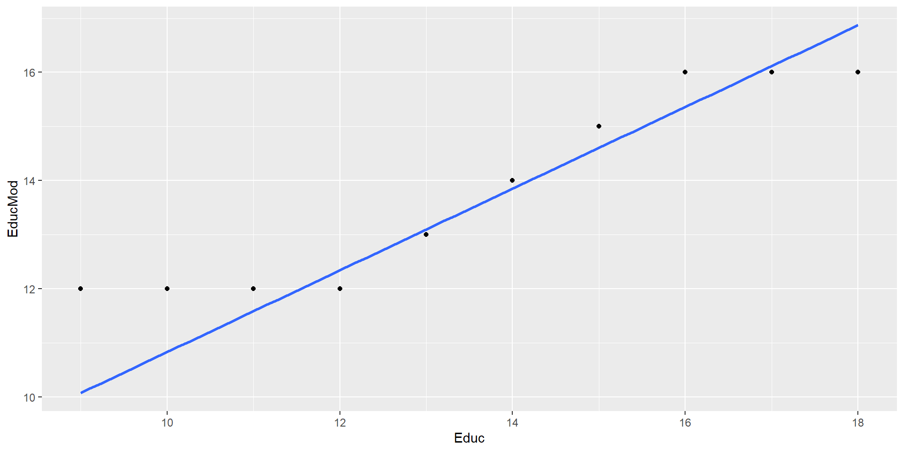
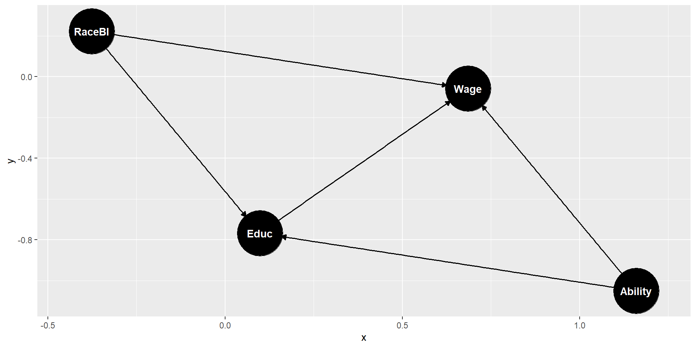

Linearity, no perfect multicollinearity, strict exogeneity, no heteroscedacisity, no autocorrelation
What are the Gauss Markov assumptions?
What means BLUE (Best Linear Unbiased Estimator Model)?
How to test if Gauss Markov assumptions are violated?
What are the consequences if Gauss Markov assumptions are violated?
Remedies to use when Gauss Markov assumptions are violated?
Linearity
No perfect Multicollinearity,
Strict Exogeneity (errors are not correlated with any predictor variable’s values)
No Heteroscedacisity
No Autocorrelation (errors are not correlated with their own lagged values; applies only when observations have a “natural order”)
If Gauss Markov assumptions are fulfilled a linear regression has the following properties:
Best: Lowest variance of error terms.
Linear model
Unbiased: The expected values of the sample \(\beta s\) coincide with the true \(\beta s\) from the unobserved population. There is no systematic over- or under-estimation of the \(\beta s\). If the \(\beta s\) are only unbiased for big samples, we call the estimation consistent.
Estimators are the \(\beta s\)
Mean monthly wage: 977.0983If not fulfilled: Coefficients \((\beta s)\) are biased and inconsistent
Identify: Visual inspection of regression and residuals.
Remedy: Use logarithms or polynomials (such as squares) on data.
One or more of the independent variables are correlated.
If not fulfilled (perfect multicolinearity): Coefficients \((\beta s)\) cannot be calculated
If not fulfilled (strong multicolinearity):
Coefficients \((\beta s)\) are biased and inconsistent.
However, predictions are not.
Coefficients \((\beta s)\) are sensitive to small changes in data.
Identify: VIF between an independent variables \(i\) regressed on all other variables should be less than \(10\) (some authors use less than 5): \(VIF_i=\frac{1}{1-R^2_{i}}\)
Remedy:
Do nothing
Eliminate variable(s) that are correlated with others — step wise (!)
Others
Assume we have two variables for education.
\(Edu\) measures the years of education,
\(EducMonth\) measures the month of education and is 12 times \(Educ\)
library(tidymodels)
library(janitor)
library(wooldridge)
DataWage=wage2 |>
clean_names("upper_camel") |>
select(Wage,LogWage=Lwage, Educ, Tenure, RaceBl=Black, Feduc, Meduc) |>
mutate(ParEdu=pmax(Feduc,Meduc)) |>
drop_na(ParEdu) |>
mutate(EducMonth=12*Educ)
lm(LogWage~ Educ+ EducMonth + Tenure+ RaceBl, DataWage)
Call:
lm(formula = LogWage ~ Educ + EducMonth + Tenure + RaceBl, data = DataWage)
Coefficients:
(Intercept) Educ EducMonth Tenure RaceBl
5.94515 0.05653 NA 0.01375 -0.18283 Assume we have two variables for education.
\(Edu\) measures the years of education
\(EducMod\)
counts high school dropouts as 12 years of education and
does not consider graduate studies and thus cuts off \(EducMod\) at 16 years.
library(tidymodels)
library(janitor)
library(wooldridge)
DataWage=wage2 |>
clean_names("upper_camel") |>
select(Wage,LogWage=Lwage, Educ, Tenure, RaceBl=Black, Feduc, Meduc) |>
mutate(ParEdu=pmax(Feduc,Meduc)) |>
drop_na(ParEdu) |>
mutate(EducMod=ifelse(Educ<12, 12, Educ)) |>
mutate(EducMod=ifelse(Educ>16, 16, EducMod))
ggplot(DataWage, aes(x=Educ, y=EducMod))+
geom_point()+
geom_smooth(method = "lm", se=FALSE)
Call:
lm(formula = LogWage ~ Educ + Tenure + RaceBl, data = DataWage)
Residuals:
Min 1Q Median 3Q Max
-1.91980 -0.24290 0.02338 0.26183 1.29702
Coefficients:
Estimate Std. Error t value Pr(>|t|)
(Intercept) 5.945146 0.094840 62.686 < 2e-16 ***
Educ 0.056528 0.006550 8.630 < 2e-16 ***
Tenure 0.013752 0.002894 4.752 2.43e-06 ***
RaceBl -0.182830 0.051243 -3.568 0.000384 ***
---
Signif. codes: 0 '***' 0.001 '**' 0.01 '*' 0.05 '.' 0.1 ' ' 1
Residual standard error: 0.389 on 718 degrees of freedom
Multiple R-squared: 0.1432, Adjusted R-squared: 0.1397
F-statistic: 40.01 on 3 and 718 DF, p-value: < 2.2e-16
Call:
lm(formula = LogWage ~ Educ + EducMod + Tenure + RaceBl, data = sample_n(DataWage,
500))
Residuals:
Min 1Q Median 3Q Max
-1.92395 -0.23920 0.03422 0.26833 1.28761
Coefficients:
Estimate Std. Error t value Pr(>|t|)
(Intercept) 5.871549 0.160592 36.562 < 2e-16 ***
Educ 0.040239 0.026715 1.506 0.132643
EducMod 0.023173 0.034057 0.680 0.496545
Tenure 0.012128 0.003502 3.463 0.000581 ***
RaceBl -0.126553 0.063509 -1.993 0.046847 *
---
Signif. codes: 0 '***' 0.001 '**' 0.01 '*' 0.05 '.' 0.1 ' ' 1
Residual standard error: 0.3924 on 495 degrees of freedom
Multiple R-squared: 0.1329, Adjusted R-squared: 0.1259
F-statistic: 18.97 on 4 and 495 DF, p-value: 1.582e-14
Call:
lm(formula = LogWage ~ Educ + EducMod + Tenure + RaceBl, data = sample_n(DataWage,
500))
Residuals:
Min 1Q Median 3Q Max
-1.92615 -0.24605 0.01413 0.26025 1.28713
Coefficients:
Estimate Std. Error t value Pr(>|t|)
(Intercept) 5.874878 0.165427 35.514 < 2e-16 ***
Educ 0.036346 0.027017 1.345 0.179139
EducMod 0.027514 0.034432 0.799 0.424627
Tenure 0.009961 0.003643 2.735 0.006468 **
RaceBl -0.212921 0.063535 -3.351 0.000866 ***
---
Signif. codes: 0 '***' 0.001 '**' 0.01 '*' 0.05 '.' 0.1 ' ' 1
Residual standard error: 0.4022 on 495 degrees of freedom
Multiple R-squared: 0.1332, Adjusted R-squared: 0.1262
F-statistic: 19.01 on 4 and 495 DF, p-value: 1.473e-14
Call:
lm(formula = LogWage ~ EducMod + Tenure + RaceBl, data = DataWage)
Residuals:
Min 1Q Median 3Q Max
-1.90161 -0.24486 0.02363 0.26037 1.30147
Coefficients:
Estimate Std. Error t value Pr(>|t|)
(Intercept) 5.764404 0.117759 48.951 < 2e-16 ***
EducMod 0.070007 0.008307 8.428 < 2e-16 ***
Tenure 0.014019 0.002902 4.831 1.67e-06 ***
RaceBl -0.189450 0.051268 -3.695 0.000236 ***
---
Signif. codes: 0 '***' 0.001 '**' 0.01 '*' 0.05 '.' 0.1 ' ' 1
Residual standard error: 0.3898 on 718 degrees of freedom
Multiple R-squared: 0.1395, Adjusted R-squared: 0.1359
F-statistic: 38.8 on 3 and 718 DF, p-value: < 2.2e-16Endogeneity: Error term is correlated with one or more of the independent (predictor) variables.
If not fulfilled: Coefficients \((\beta s)\) are biased and inconsistent.
Identify: Difficult, because if estimate is biased errors are also biased and cannot be used to test for correlation with predictors.
If domain knowledge indicates endegenity, try IV Regression and see the results of the Durbin-Wu-Hausmann (DWH) test.
Remedy:
Do nothing
Run two stage IV Regression

\[\widehat{Wage}= \beta_1 Educ + \beta_2 RaceBl +\beta3\]
\[ \widehat{Educ}= \alpha_1 ParEdu + \alpha_2 \]
\[ \widehat{Wage}= \beta_1 \widehat{Educ} + \beta_2 RaceBl +\beta3 \]
Call:
ivreg(formula = LogWage ~ RaceBl + Educ | RaceBl + ParEdu, data = DataWage)
Residuals:
Min 1Q Median 3Q Max
-1.92820 -0.25169 0.03115 0.26857 1.27358
Coefficients:
Estimate Std. Error t value Pr(>|t|)
(Intercept) 5.64928 0.22425 25.192 < 2e-16 ***
RaceBl -0.16818 0.05506 -3.054 0.00234 **
Educ 0.08532 0.01625 5.249 2.01e-07 ***
---
Signif. codes: 0 '***' 0.001 '**' 0.01 '*' 0.05 '.' 0.1 ' ' 1
Residual standard error: 0.4005 on 719 degrees of freedom
Multiple R-Squared: 0.0906, Adjusted R-squared: 0.08807
Wald test: 26.45 on 2 and 719 DF, p-value: 8.277e-12
Call:
lm(formula = LogWage ~ RaceBl + Educ, data = DataWage)
Residuals:
Min 1Q Median 3Q Max
-1.98170 -0.24692 0.02642 0.27402 1.25043
Coefficients:
Estimate Std. Error t value Pr(>|t|)
(Intercept) 6.06700 0.09267 65.471 < 2e-16 ***
RaceBl -0.20160 0.05185 -3.888 0.00011 ***
Educ 0.05497 0.00664 8.279 6.04e-16 ***
---
Signif. codes: 0 '***' 0.001 '**' 0.01 '*' 0.05 '.' 0.1 ' ' 1
Residual standard error: 0.3948 on 719 degrees of freedom
Multiple R-squared: 0.1163, Adjusted R-squared: 0.1138
F-statistic: 47.31 on 2 and 719 DF, p-value: < 2.2e-16If not fulfilled: Standard errors and thus P values are incorrect.
Identify:
Visual inspection of residuals.
White test.
Remedy: - White robust standard errors
Error variance is not constant for different values of dependent variable.
DataPlot=augment(ModelHouses) |>
mutate(Category=case_when(.fitted<500000~1,
.fitted<1000000~2,
.fitted<1500000~3,
.fitted<2000000~4,
.fitted<2500000~5,
.fitted<3000000~6,
TRUE~7)) |>
group_by(Category) |>
mutate(TwoSDHigh=mean(.resid)+2*sd(.resid)) |>
mutate(TwoSDLow=mean(.resid)-2*sd(.resid))
ggplot(DataPlot)+
geom_point(aes(x=.fitted, y=.resid, color="Residuals"), alpha=0.2)+
geom_point(aes(x=.fitted, y=TwoSDLow, color="Mean - 2 SD"))+
geom_point(aes(x=.fitted, y=TwoSDHigh, color="Mean + 2 SD"))+
scale_color_manual(values = c("Residuals" = "black", "Mean - 2 SD" = "orange", "Mean + 2 SD" = "red")) +
scale_x_continuous(limits = c(0,2500000))+
scale_y_continuous(limits = c(-2000000,5000000))+
labs(x = "Price (estimated)")